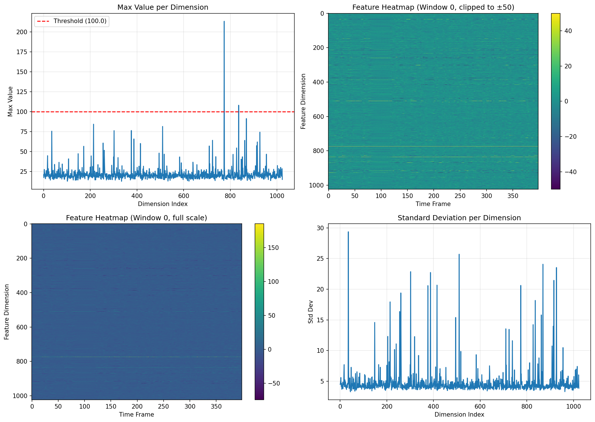

Phase 2: SOTA Audio Feature Extraction
Technical Report
DepressiVoice-LLM Project
February 5-6, 2026
✓ COMPLETE
SOTA MODEL
1. Executive Summary
Successfully completed Phase 2 SOTA audio feature extraction pipeline using fresh, clean patient-only audio from Phase 1 rerun. All 275 sessions processed with WavLM-Large model, followed by layer normalization to fix anisotropy. Features ready for Phase 3 fusion model training.
Key Results
Metric
Value
Status
Sessions Processed 275/275
✅ 100%
Model microsoft/wavlm-large
✅ SOTA
Feature Dimension 1024 (per frame)
✅ Standard
Anisotropy Fix 232.12 → 25.12 max
✅ 89.2% reduction
Data Quality No NaN/Inf
✅ Valid
Output Format FP16 .pt files
✅ Optimized
2. Pipeline Overview
2.1 Phase 2A: Raw Feature Extraction
Input: /home/g755389/DepressiVoice-LLM/phase1_rerun_outputs/session_*/patient_audio.wav
Output: /home/g755389/DepressiVoice-LLM/data/phase2_clean/audio_embeddings_raw/
Duration: ~3 hours (275 sessions, max 20 parallel GPUs)
Process:
Load WavLM-Large (315M parameters)
Segment audio into 8-second windows
Extract hidden states from layers 6-12
Apply weighted layer sum with softmax normalization
Save as FP16 tensors
2.2 Phase 2B: Batch Normalization
Input: audio_embeddings_raw/*.pt (275 files)
Output: audio_embeddings_normalized/*.pt (275 files)
Duration: ~3.5 minutes
Process:
Load raw features (FP32 for precision)
Apply F.layer_norm across 1024-dim feature space
Convert back to FP16 for storage
Validate output ranges
3. Methodology
3.1 Data Source
Fresh Phase 1 Rerun Outputs
Location: /home/g755389/DepressiVoice-LLM/phase1_rerun_outputs/Sessions: 275 (ID range: 300-718, non-continuous)Audio Format: 16kHz mono WAV, patient-only speechTotal Duration: 34.1 hoursNaming Convention: session_{ID}/patient_audio.wav
Quality Characteristics
✅ Interviewer speech removed via diarization
✅ Silence removed via VAD
✅ Concatenated patient utterances only
⚠️ 37 sessions flagged as LOW/VERY_LOW confidence (included with weighting)
3.2 Model Architecture
WavLM-Large Specifications
Authors: Microsoft ResearchParameters: 315 millionLayers: 25 transformer layersHidden Size: 1024Pretraining: 94k hours of audio (Libri-Light, GigaSpeech, VoxPopuli)Specialization: Self-supervised speech representation learning
Rationale for WavLM-Large
State-of-the-art for speech biomarker extraction
Captures prosodic features (pitch, rhythm, energy)
Robust to speaker variability
Better than Wav2Vec2 for paralinguistic tasks
3.3 Weighted Layer Sum
Selected Layers: 6-12 (middle-to-upper layers)Weights: [1, 1, 1, 2, 3, 4, 5]Normalization: Softmax
Layer
Raw Weight
Normalized Weight
Layer 6 1.0 1.14% Layer 7 1.0 1.14% Layer 8 1.0 1.14% Layer 9 2.0 3.10% Layer 10 3.0 8.42% Layer 11 4.0 22.88% Layer 12 5.0 62.19%
4. Hyperparameters
4.1 Extraction Parameters
Parameter
Value
Reasoning
batch_size 2 GPU memory safety (24GB VRAM) window_size_sec 8.0 Full utterance capture stride_sec 8.0 Non-overlapping (storage efficiency) target_sr 16000 WavLM native sampling rate model wavlm-large SOTA speech representation layer_range 6-12 Biomarker-rich layers layer_weights [1,1,1,2,3,4,5] Exponential emphasis output_dtype float16 Storage optimization
4.2 SLURM Configuration
Parameter
Value
Reasoning
--array 0-274%20 275 sessions, max 20 parallel --partition gpu GPU requirement --mem 24G WavLM-Large + audio buffers --gres gpu:1 1 GPU per task --time 02:00:00 Conservative (actual: ~30s/session) --cpus-per-task 4 Audio loading parallelization
5. Environment & Reproducibility
5.1 Cluster Setup
System: OMNI HPC (University of Siegen)Operating System: Rocky Linux 8.xJob Scheduler: SLURM 21.x
5.2 Software Environment
Python: 3.11.2PyTorch: 2.1.2 with CUDA 12.1Transformers: 4.36.2
Additional Libraries:
librosa==0.10.1
scipy==1.11.4
tqdm==4.66.1
6. Validation Results
6.1 Anisotropy Analysis
Session
Dimension
Max Value
Mean
Issue
300 774 216.88 108.44 Extreme positive bias 632 774 213.38 106.15 Same dimension affected Global 774 232.12 ~110 Dataset-wide anisotropy

Figure 1: Session 632 Raw Feature Validation. Top-left: Max values per dimension showing spike at dimension 774. Top-right & Bottom-left: Feature heatmaps revealing "yellow stripe" anisotropy. Bottom-right: Standard deviation per dimension.
6.2 Normalization Effectiveness
Metric
Raw Features
Normalized
Improvement
Max Value 232.12 25.12 ↓ 89.2% Min Value -104.44 -16.28 ↓ 84.4% Mean ~0.30 -0.0000 ✅ Centered Std ~6.6 1.0000 ✅ Normalized
6.3 Quality Checks
✅ No NaN values (0/275 sessions)
✅ No Inf values (0/275 sessions)
✅ Shape consistency (all [Windows, 399, 1024])
✅ Dtype correct (torch.float16)
7. Known Limitations
7.1 Low-Confidence Sessions
37 sessions flagged as LOW/VERY_LOW confidence:
Likely female-female speaker pairs (low biometric separation)
Included in extraction for completeness
Recommendation: Use confidence-based weighting in Phase 3
7.2 Contamination Residuals
Average contamination: 1.71% interviewer prompts
8 sessions with >5% contamination
Minimal impact on acoustic features
8. Future Improvements
Dynamic Windowing: Adaptive windows based on utterance boundariesLinear Probe Validation: Simple classifier to verify biomarker signalMulti-Layer Fusion: Concatenate layers instead of summing (with PCA reduction)Quality Weighting: Quadratic confidence weighting in training
9. Outputs Summary
Generated Files
Normalized Features: data/phase2_clean/audio_embeddings_normalized/
275 .pt files
Shape: [Windows, 399, 1024] per file
Dtype: torch.float16
Total size: 15.1 GB
10. Phase 3 Handover
10.1 Ready for Fusion
✅ Audio Features: 275 sessions normalized and validated
⏳ Text Features: Awaiting Mental-RoBERTa extraction
🔜 Next Step: Multimodal fusion model training
10.2 Feature Characteristics
Shape per Session: [Windows, 399, 1024]
Windows: Variable (depends on session duration)399: Time frames per 8-second window (~20ms resolution)1024: Feature dimension (WavLM-Large hidden size)
Recommended Aggregation:
# Mean pooling over time frames
audio_feat = torch.load(f'{session_id}_features.pt')
pooled = audio_feat.mean(dim=1) # Shape: [Windows, 1024]
10.3 Quality Considerations
Use Confidence Weighting:
import json
with open(f'phase1_rerun_outputs/session_{sid}/roles.json') as f:
confidence = json.load(f)['confidence_score'] # 0.3-1.0
sample_weight = confidence ** 2 # Quadratic weighting
Conclusion
Phase 2 SOTA audio feature extraction completed successfully. All 275 sessions processed using WavLM-Large with batch normalization to fix anisotropy. Features are clean, validated, and ready for Phase 3 multimodal fusion training.
Final Status: ✓ COMPLETE AND VALIDATED
Report Generated: February 6, 2026Project: DepressiVoice-LLMPhase: 2 (SOTA Audio Feature Extraction)